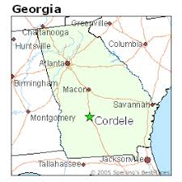

My name is Nina Hughes but I go by my middle name Shelby. I am currently a senior at the University of Georgia so you know what that means...it is time for me to get a job. As a compliment to my resume, I want this webpage to serve as an alternative for you to get to know me and become more familiar with my goals.
I was born and raised in Cordele, Georgia where I attended Crisp County Schools.  As a middle schooler, I set a goal for myself to attend the University of Georgia. Through hard work and determination that dream came true in August 2014 when I enrolled at UGA as a freshman. My time at UGA has felt like a rollercoaster at many times, through learning experiences and opportunities for growth. Yet, here I am almost 4 years later wondering where all the time has gone.
In May I will graduate with a bachelor's degree in Sport Management. Although I have more than enjoyed 2 years of internship with the Georgia Football Program, I am planning on pursuing a career outside of sports. After graduation, I plan to enroll in a graduate education program specializing in Special Education, an area that is very close to my heart. I am also planning to begin teaching full-time as a pursue my master's degree.
| What? | Where? | Why? |
|---|---|---|
| Part-Time Graduate Student | Valdosta State, Columbus State, or Georgia College | To gain needed certification to teach special education |
| Full-Time Teacher | Pre-K through 5th grade classroom | To gain experience whilst completing my graduate degree |
| Cheerleading Coach | Middle or High School | To continue doing something I love |
You may be asking, "Shelby, why do you want to do these things?" or "Why are these your goals?". Thankfully, I will explain that here. I come from a family of career educators who always made my goals and dreams a priority. At times when I struggled with what to do with my life and what my purpose was, my family was always there to support me.
Their support combined with a lifelong, genuine passion for serving others, I decided that becoming a special education teacher specializing in early learning was my purpose. I feel most at home in a classroom surrounded by children. I know that teaching, especially teaching exceptional children will be hard at times but I also know that it will be more than rewarding at the end of every day and that reward with foster fulfillment in my life. I can't wait to begin this next stage of life!